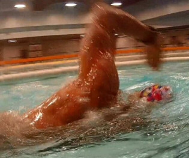

|
 |
 |
 |
Mastery Freestyle 2016
LESSON 4 EXPERT STROKE LENGTH AND TEMPO(高阶节拍练习)
Adobe Flash Player is required to watch this video.
第四课
高阶节拍练习
高阶节拍练习
第四课是掌控节拍。学着在任一给定时刻调整到你个人的划距与划频的最佳组合，
通过改变划距和划水的节奏来产生速度，而不是更加刻苦的训练。
永远不要把注意力放在更加刻苦的训练上面，而应该放在掌握一个技巧能够自然而然的提高速度。
这正是这一课所要教给你的。这一课的关键，由我来演示的本视频所展示的关键内容，我们把它叫做自由泳成功算法。
即当你加快节拍时，你能在多长时间保持一个固定的划水数。
在我的演示里，我在25米的泳池以1.1秒/划的节拍游进，我用了17划到边。
然后我以4%秒为间隔不断加快节拍，一直到0.9秒。这样我保持了同样的划距，节拍却变化了0.2秒。
如果从一开始，你就能够将节拍改变0.06秒、0.07秒或0.08秒，那么你就会做得非常非常好。
利用本视频所演示的练习进行训练的话，你会成为这方面的超级高手。
1.10秒/划 17划 22.4秒
1.06秒/划 17划 21.2秒
1.02秒/划 17划 20.5秒
0.98秒/划 17划 19.8秒
0.94秒/划 17划 19.3秒
0.90秒/划 17划 18.8秒
慢动作研究
1.10秒/划
（54划/分钟）
和
0.90秒/划
（66划/分钟）
1.10秒/划 17划 22.4秒
1.06秒/划 17划 21.2秒
1.02秒/划 17划 20.5秒
0.98秒/划 17划 19.8秒
0.94秒/划 17划 19.3秒
0.90秒/划 17划 18.8秒
全泳: 视频学习
5.1 全泳: 进取的节奏
（速度如何产生）
愿你游得和我一样快乐!
特里.拉夫林